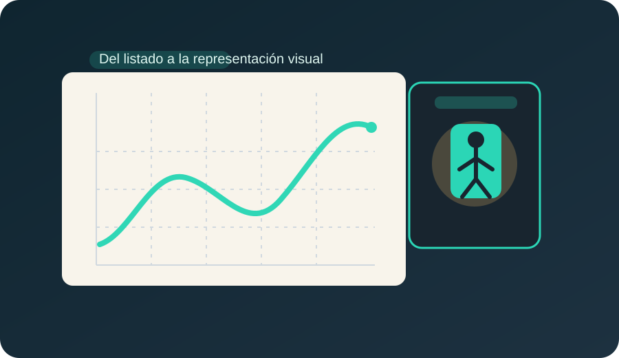
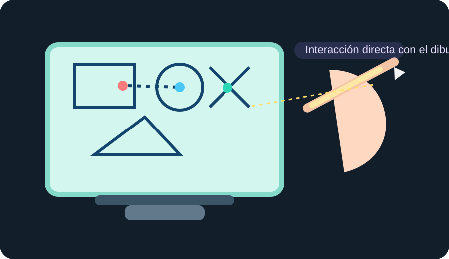
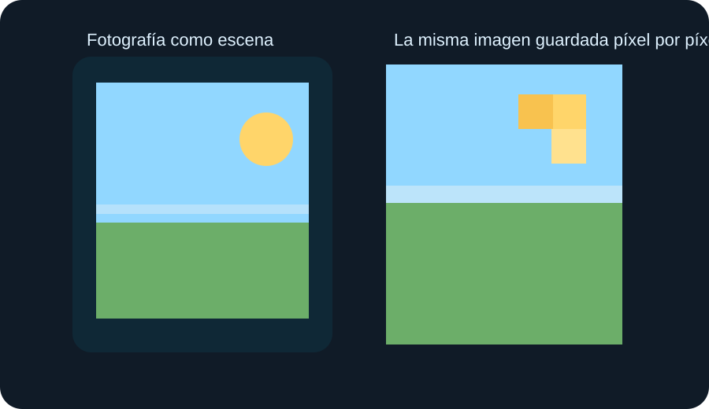
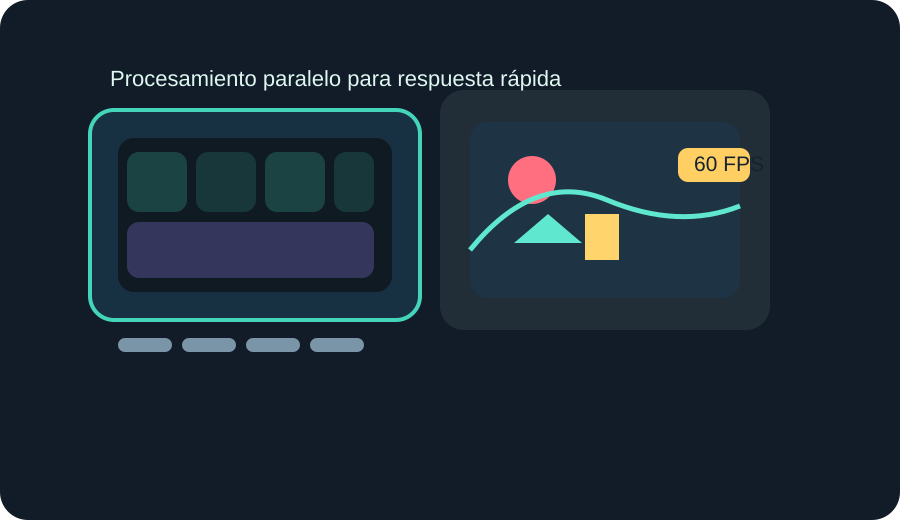
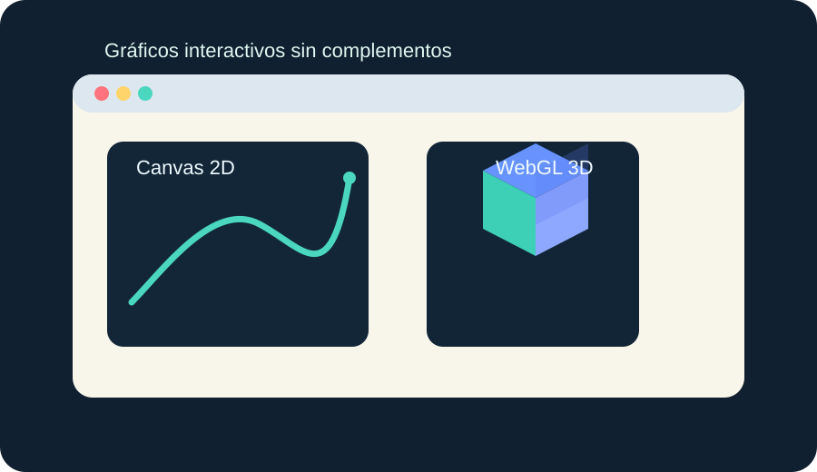
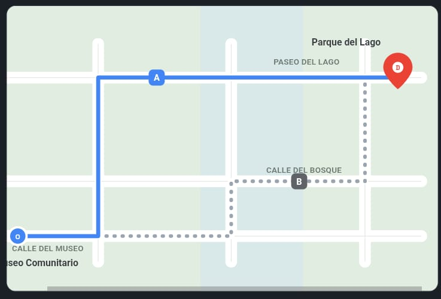

Museo Web
De los primeros gráficos al color digital interactivo
La graficación por computadora es la forma de representar, organizar y modificar imágenes, figuras o datos con ayuda de una computadora para que una persona pueda observarlos, interpretarlos o usarlos para tomar decisiones.
Autora: Saraí Ceballos
Un mismo tema puede verse como línea, mapa, píxel, diagrama o interfaz. Esa es la idea central que guía todo el museo.
Sección 1
Cinco momentos de la evolución gráfica
Cada ficha resume un problema anterior, el cambio técnico que apareció, su impacto y un ejemplo actual donde esa posibilidad sigue presente.

Primeros gráficos por computadora
La imagen como salida: del listado al trazador y la pantalla
Limitación anterior: Cuando los resultados salían en tarjetas perforadas o listados de números, era difícil reconocer patrones, tendencias o relaciones dentro de muchos datos.
Cambio técnico: Investigué el plóter. Este dispositivo podía dibujar líneas y figuras sobre papel, por ejemplo gráficas, diagramas y cuadrículas que representaban visualmente la información.
Impacto: La representación visual ayudó a reconocer con más facilidad los patrones en los datos y permitió interpretar mejor formas, trayectorias y relaciones.
Ejemplo actual: El Administrador de tareas de una computadora muestra gráficas para observar los cambios en la actividad del CPU y la memoria.

1963
Sketchpad: dibujos geométricos interactivos
Limitación anterior: Antes era difícil crear y corregir un dibujo geométrico completo, porque las computadoras trabajaban sobre todo con comandos o tarjetas perforadas y no se manipulaba directamente la imagen en pantalla.
Cambio técnico: Sketchpad combinó programa, pantalla CRT y lápiz óptico. Permitía ver el dibujo en tiempo real, seleccionar objetos, moverlos, copiarlos, escalarlos, rotarlos, agruparlos y definir restricciones entre ellos.
Impacto: Ayudó a trasladar ideas de diseño gráfico al diseño digital de una manera más flexible, precisa y veloz, porque el dibujo podía editarse directamente.
Ejemplo actual: Adobe Illustrator permite crear y modificar figuras directamente sobre el lienzo de trabajo.
Video sugerido
Este video muestra a Sketchpad en funcionamiento y ayuda a visualizar por qué fue tan importante para la interacción directa con dibujos geométricos.

Computación personal
Imágenes rasterizadas: cada píxel guarda color
Limitación anterior: Un sistema vectorial describe líneas y figuras, pero retocar detalles de una fotografía, como color, luz, sombras o texturas, es difícil si la imagen no está guardada píxel por píxel.
Cambio técnico: Las imágenes rasterizadas guardan información de color en cada píxel. Así, una imagen se organiza como una cuadrícula de puntos donde cada posición tiene valores numéricos.
Impacto: Al guardar cada píxel, se puede editar una zona específica de la fotografía y modificar detalles finos como brillo, color o pequeñas áreas de la imagen.
Ejemplo actual: Photoshop permite cambiar píxeles o regiones concretas dentro de una fotografía digital.

Hardware especializado
GPU y gráficos en tiempo real
Limitación anterior: Si una aplicación o videojuego tiene retraso, las acciones tardan en verse en pantalla y eso afecta la experiencia de uso, porque se siente lag o respuesta lenta.
Cambio técnico: La GPU es un procesador especializado que acelera los cálculos gráficos. Tiene muchos núcleos y puede realizar muchas operaciones simultáneamente para representar video o gráficos con más rapidez.
Impacto: Los movimientos y acciones se vuelven más fluidos, disminuyen los retrasos y la imagen puede actualizarse rápidamente en respuesta a lo que hace una persona.
Ejemplo actual: Un videojuego de disparos necesita responder en tiempo real a los movimientos y decisiones del jugador.

Canvas desde 2004 · WebGL desde 2011
Gráficos en el navegador sin complementos
Limitación anterior: Algunos sitios dependían de complementos externos. Eso causaba problemas de instalación, compatibilidad, bloqueos del navegador o falta de soporte cuando el complemento quedaba desactualizado.
Cambio técnico: Canvas permite dibujar gráficos 2D con JavaScript. WebGL usa el procesador gráfico para mostrar gráficos 2D y 3D acelerados por hardware dentro del navegador.
Impacto: Un sitio puede ofrecer visualizaciones, juegos y experiencias interactivas sin pedir que la persona instale un complemento adicional.
Ejemplo actual: Shell Shockers funciona en el navegador y muestra gráficos interactivos sin depender de complementos.
Sección 2
Aplicación real: planificación de rutas
En esta actividad analicé cómo una aplicación de mapas convierte datos en una representación visual que ayuda a una persona a elegir un trayecto.
Cadena de análisis
- Aplicación: una aplicación de mapas como Google Maps para planear una ruta entre dos puntos.
- Usuario principal: una persona que necesita encontrar una ruta óptima desde un origen hasta un destino.
- Problema: necesita decidir qué trayecto seguir caminando desde el Museo Comunitario hasta el Parque del Lago.
- Datos de entrada: origen: Museo Comunitario; destino: Parque del Lago; medio: a pie.
- Representación visual: el origen se muestra con la letra O y el destino con la letra D. La ruta A usa una línea continua y la ruta B una línea discontinua. Además, se muestran tiempo, distancia y nombres de calles, por lo que se distinguen sin depender solo del color.
- Decisión o acción: la persona puede comparar las rutas y elegir cuál seguir según tiempo, distancia y recorrido.
- Modelo de color propuesto: RGB, porque la pantalla se muestra en un dispositivo digital y este modelo organiza el color con rojo, verde y azul.

Ruta A
12 minutos · 900 metros
Calle del Museo → Avenida Central → Paseo del Lago
Ruta B
15 minutos · 1.1 kilómetros
Calle del Museo → Calle del Olmo → Calle del Bosque → Avenida del Lago → Paseo del Lago
Sección 3
Laboratorio de color con predicción
Aquí relacioné lo que se observa en un color con los números que lo describen. En cada experimento escribí una predicción, observé datos y concluí usando máximo, mínimo, delta y modelos de color.
Práctica con imagen base: señal costera
Predicción: Predije que la zona del cielo tendría una saturación relativamente alta porque es un color azul intenso, mientras que una zona clara como el Sol tendría una saturación menor porque se acerca más al blanco.
Dato observado: En la región del cielo observé RGB(79, 151, 231), CMY(69%, 40.8%, 9.4%), HSV(211.6°, 65.8%, 90.6%) y HSL(211.6°, 76%, 60.8%). El canal mayor fue B = 231 y el menor fue R = 79, por lo que el delta fue 152.
Conclusión basada en valores: La diferencia entre los canales confirmó que el cielo no es un color gris, porque el máximo y el mínimo no coinciden. Además, al pasar a escala de grises todavía se distinguen regiones por sus diferentes niveles de luminosidad.
Experimento 1 · Cuando desaparece el tono
Predicción: Si R, G y B tienen el mismo valor, entonces el máximo y el mínimo serán iguales, el delta será 0 y la saturación también será 0.
Datos: Negro RGB(0, 0, 0) → máximo 0, mínimo 0, delta 0, saturación 0%. Blanco RGB(255, 255, 255) → máximo 255, mínimo 255, delta 0, saturación 0%. Gris RGB(128, 128, 128) → máximo 128, mínimo 128, delta 0, saturación 0%.
Conclusión basada en valores: En los tres casos los canales fueron iguales, por eso el delta fue 0 y el color perdió tono. Lo que cambió fue el nivel del valor: negro 0%, gris 50.2% y blanco 100%.
Experimento 2 · Mismo sector, distinta intensidad
Predicción: Si dos colores pertenecen al mismo sector del círculo de tono, su H será parecida, aunque cambien su valor y la intensidad de sus canales RGB.
Datos: Color 1: RGB(64, 128, 192) → máximo 192, mínimo 64, delta 128, HSV(210°, 66.7%, 75.3%). Color 2: RGB(32, 64, 96) → máximo 96, mínimo 32, delta 64, con el mismo sector azul.
Conclusión basada en valores: Los dos colores se mantuvieron en el sector azul, pero el segundo tuvo menor valor máximo y menor delta. Eso hizo que se viera menos intenso y más oscuro, sin cambiar mucho su tono general.
Experimento 3 · Un color intermedio
Predicción: Si los tres canales son diferentes y el azul es el mayor, entonces habrá un tono definido y una saturación mayor que 0.
Datos: RGB(128, 128, 192) → máximo 192, mínimo 128 y delta 64. El canal azul es el mayor, mientras que rojo y verde tienen el mismo valor menor.
Conclusión basada en valores: Como el máximo y el mínimo no fueron iguales, apareció un tono definido y el color no fue acromático. La diferencia de 64 entre máximo y mínimo confirma que hay separación entre canales y por eso existe saturación.
Corrección conceptual
Antes pensaba que… cambiar los valores RGB solo cambiaba el color visible, pero no tenía claro cómo se relacionaban con el tono y la saturación.
Después observé que… cuando R = G = B, como en RGB(128, 128, 128), el máximo y el mínimo coinciden y el delta es 0. En cambio, en el cielo RGB(79, 151, 231) el azul fue el mayor y el delta fue 152.
Esto cambió mi explicación porque… ahora entiendo que la diferencia entre máximo y mínimo ayuda a describir la saturación, y que el valor V depende del canal más alto, mientras que el tono necesita una rama distinta según cuál canal sea el máximo.
Sección 4
De la fórmula al algoritmo
Después de observar el laboratorio, convertí los cálculos de RGB a HSV en una ruta que una computadora puede seguir. Luego la programé y la probé en la Forja.
Pseudocódigo
- La función recibe tres valores de entrada: R, G y B, cada uno entre 0 y 255, y tendrá como salida los valores H, S y V.
- La función normaliza los tres canales dividiendo R, G y B entre 255 para llevarlos a una escala de 0 a 1.
- La función identifica el valor máximo, el valor mínimo y calcula el delta restando el mínimo al máximo.
- Si el delta es igual a 0, establece H en 0 porque no existe un tono definido y evita intentar ese cálculo.
- Si el delta es diferente de 0, determina cuál canal es el máximo y usa la rama correspondiente para calcular el tono.
- Calcula la saturación usando delta y el valor máximo. Si el máximo fuera 0, establece S en 0 para evitar una división inválida.
- Calcula V a partir del canal máximo y lo convierte a porcentaje.
- Si el tono queda fuera del intervalo de 0° a 360°, lo ajusta hasta dejarlo dentro de ese rango.
- Finalmente devuelve los tres resultados en el orden H, S y V, con H en grados y S y V en porcentaje.
Ruta explicada con RGB(64, 128, 192)
Primero normalicé los canales dividiendo cada valor entre 255: R = 64/255 ≈ 0.251, G = 128/255 ≈ 0.502 y B = 192/255 ≈ 0.753.
Después comparé los tres valores para obtener el máximo y el mínimo. El Cmáx fue 0.753 y correspondió al azul; el Cmín fue 0.251 y correspondió al rojo.
Luego calculé el delta: Δ = 0.753 − 0.251 ≈ 0.502.
Para V usé el canal máximo: V = 0.753 × 100 ≈ 75.3%. Como Cmáx no es 0, calculé S = Δ/Cmáx × 100 ≈ 66.7%.
Como el canal máximo fue azul, utilicé su rama para H y obtuve aproximadamente 210°. No fue necesario ajustar el tono porque ya estaba dentro del intervalo de 0° a 360°.
Con un redondeo a un decimal, el resultado fue HSV(210°, 66.7%, 75.3%).
Caso límite importante: si delta = 0, entonces R, G y B son iguales, el color es acromático, H se registra como 0 por convenio y se evita el cálculo del tono.
Función probada en JavaScript
function convertRGBtoHSV(r, g, b) {
const red = r / 255;
const green = g / 255;
const blue = b / 255;
const max = Math.max(red, green, blue);
const min = Math.min(red, green, blue);
const delta = max - min;
let h = 0;
let s = 0;
let v = max * 100;
if (delta === 0) {
h = 0;
} else if (max === red) {
h = 60 * (((green - blue) / delta) % 6);
} else if (max === green) {
h = 60 * (((blue - red) / delta) + 2);
} else {
h = 60 * (((red - green) / delta) + 4);
}
if (h < 0) {
h += 360;
}
if (max === 0) {
s = 0;
} else {
s = (delta / max) * 100;
}
return [h, s, v];
}Pruebas diseñadas antes de programar
| Entrada fija | Salida HSV esperada | Qué comportamiento comprueba |
|---|---|---|
| RGB(0, 0, 0) | 0°, 0%, 0% | Caso acromático con delta = 0 y máximo = 0 |
| RGB(255, 255, 255) | 0°, 0%, 100% | Caso acromático con delta = 0 |
| RGB(255, 0, 0) | 0°, 100%, 100% | Rama del canal máximo rojo |
| RGB(0, 255, 0) | 120°, 100%, 100% | Rama del canal máximo verde |
| RGB(64, 128, 192) | 210°, 66.7%, 75.3% | Rama del canal máximo azul y revisión del ajuste de tono |
Resultado en la Forja: la función fue aceptada por las cuatro categorías ocultas del juez.
Sección 5
Glosario
Este glosario resume términos importantes de la misión con palabras propias y un ejemplo breve.
Píxel
Es una posición dentro de una imagen rasterizada donde se guardan valores de color. Ejemplo: en una fotografía digital cada cuadrito corresponde a un píxel.
RGBA
Es el orden en que un arreglo guarda rojo, verde, azul y alfa. Ejemplo: [55, 230, 193, 255] representa un color y su opacidad.
Canal alfa
Indica la opacidad de un píxel. Ejemplo: alfa 255 significa opacidad completa.
Normalizar
Es convertir un valor de 0–255 a una escala de 0–1. Ejemplo: 128/255 ≈ 0.502.
RGB
Modelo de color que usa rojo, verde y azul. Ejemplo: las pantallas muestran color usando combinaciones de estos tres componentes.
CMY
Modelo que usa cian, magenta y amarillo como complementos del RGB normalizado. Ejemplo: ayuda a comparar una mezcla sustractiva ideal con la mezcla de luz.
HSV
Modelo que separa tono, saturación y valor. Ejemplo: es útil cuando se quiere conservar el tono y cambiar la intensidad general del color.
HSL
Modelo que separa tono, saturación y luminosidad. Ejemplo: sirve para comparar variaciones de un color manteniendo el mismo tono.
Cmáx y Cmín
Son el valor normalizado mayor y menor entre R, G y B. Ejemplo: en RGB(64, 128, 192), Cmáx es el azul y Cmín es el rojo.
Delta
Es la diferencia entre Cmáx y Cmín. Ejemplo: si los tres canales son iguales, delta vale 0.
Acromático
Describe un color sin tono definido, como negro, blanco o gris. Ejemplo: RGB(128, 128, 128) es acromático porque R = G = B.
Diseño responsivo
Es una forma de diseñar una página para que se adapte a varias pantallas. Ejemplo: este museo se reorganiza en columnas o una sola columna según el ancho de la pantalla.
Sección 6
Cierre
Idea inicial: al principio veía la graficación por computadora sobre todo como imágenes hechas por una computadora, pero no entendía con claridad todo lo que hay detrás de mostrar, editar o interpretar información visual.
Evidencia que cambió mi idea: la comparación entre los cinco momentos históricos, el análisis de la ruta en mapas, el laboratorio de color y el algoritmo RGB → HSV me mostraron que la graficación no solo se trata de “dibujar”, sino de representar datos, organizar información y hacer posible la interacción.
Conclusión personal: ahora entiendo que la evolución gráfica resolvió problemas concretos: primero hacer visible la información, después manipularla, luego guardar detalles por píxel, acelerar la respuesta en tiempo real y finalmente llevar gráficos interactivos al navegador. También aprendí que un mismo color puede describirse con distintos modelos y que un algoritmo ayuda a convertir observaciones en pasos verificables.
Bitácora de uso de IA: usé IA para organizar ideas, revisar redacción, aclarar dudas y proponer una forma más clara de explicar algunos conceptos. Después confirmé los resultados con mis cálculos, con las actividades y con las pruebas del simulador.
Sección 7
Fuentes y créditos
Las ilustraciones en formato SVG incluidas en esta página fueron elaboradas para este proyecto a partir de la información investigada. Las siguientes fuentes respaldan el contenido consultado.
Fuentes de contenido
- Computer History Museum. Timeline of Computer Graphics and Games. Consultado en septiembre de 2026.
- Wikipedia. Sketchpad. https://en.wikipedia.org/wiki/Sketchpad
- Hispaprint. Historia del diseño gráfico: Sketchpad, el primer editor gráfico. https://hispaprint.com/blog/disenografico/ha-del-diseno-grafico-sketchpad-el-primer-editor-grafico
- Adobe. Raster vs. vector: ¿cuál es la diferencia? https://www.adobe.com/mx/creativecloud/file-types/image/comparison/raster-vs-vector.html
- IBM. ¿Qué es una GPU? https://www.ibm.com/mx-es/think/topics/gpu
- Servers.com. Why latency and ping in gaming are crucial to player experience. https://www.servers.com/blog/why-latency-and-ping-in-gaming-are-crucial-to-player-experience
- HP Tech Takes. ¿Qué son los FPS y cómo optimizarlos? https://www.hp.com/pe-es/tech-takes/gaming/conceptos/que-son-fps-y-como-optimizar.html
- FSP Group. What is GPU? https://www.fsp-group.com/en/knowledge-prd-78.html
- MDN Web Docs. Getting started with WebGL. https://developer.mozilla.org/en-US/docs/Web/API/WebGL_API/Tutorial/Getting_started_with_WebGL
- Google Maps Help. Obtener instrucciones y mostrar rutas. https://support.google.com/maps/answer/144339?hl=es-419
- MDN Web Docs. Pixel manipulation with canvas. https://developer.mozilla.org/en-US/docs/Web/API/Canvas_API/Tutorial/Pixel_manipulation_with_canvas
- W3C. CSS Color Module Level 4. https://www.w3.org/TR/css-color-4/
Créditos de imágenes
- 01-plotter-visual.svg: elaboración propia para representar la salida gráfica mediante un trazador.
- 02-sketchpad.svg: elaboración propia inspirada en la interacción directa de Sketchpad con pantalla CRT y lápiz óptico.
- 03-raster.svg: elaboración propia para representar una imagen rasterizada y su cuadrícula de píxeles.
- 04-gpu.svg: elaboración propia para representar una GPU y gráficos en tiempo real.
- 05-webgl.svg: elaboración propia para representar Canvas y WebGL dentro del navegador.
- mapa-rutas.svg: elaboración propia con base en la muestra local de la actividad B.